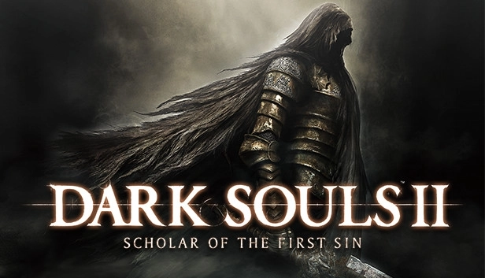
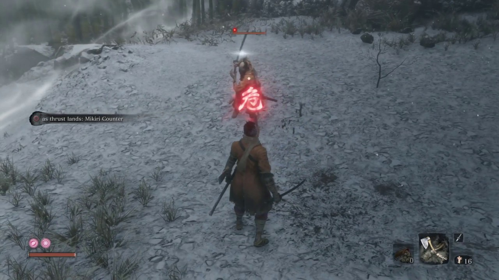

MULTIMEDIA: Videojuegos
Bugs
¿Que es un bug?, dentro del mundo de los videojuegos hay 3 términos conocidos como "Exploits",
"bugs" o "glitches", aunque a menudo son englobados y llamados únicamente "bugs", estos son fallos en
el funcionamiento de un videojuego
Exploit
Un exploit es un fallo en un videojuego que permite al jugador abusar de él para conseguir una ventaja, como el clásico clonamiento de Pokemon o el utilizar el máximo de un consumible en Dark Souls. Por ejemplo en este video podemos ver como usando este glitch podemos usar un consumible 999 veces teniendo únicamente uno de estosBug
Un bug es un fallo mayor que puede hacer que los archivos de un juego se corrompan y puedan causar problemas serios como el corromper una partida guardada dejándola inutilizable o hacer que el juego crasheeGlitch
Un glitch es un fallo menor que puede suceder aleatoriamente y genera fallos a menudo visuales, pero que no suelen ser peligrososEl arte en los videojuegos
Los videojuegos, si estan bien hechos, pueden indudablemente ser considerados arte, uno de estos aspectos
es el visual, a continuación veremos 3 imagenes que bien podrian ser un cuadro pero que pertenecen a videojuegos
El audio en los videojuegos
El audio en los videojuegos es una cosa a menudo pasada por alto, pero muy util y necesaria, los sonidos son necesarios para
ofrecer un "Feedback" satisfactorio al jugador, o para aportar información al mismo sin que este tenga que desconcentrarse, a continuación
unos ejemplos:
Para darle satisfacción al jugador por una accion que él mismo ha realizado, este sonido corresponde a un "Parry" del juego "Dark Souls 2", movimiento avanzado
que requiere de precision para ser realizado, consiste en desviar un ataque enemigo usando un escudo para hacer un contrataque

Para informar al jugador, junto con un indicador visual en forma de "kanji" rojo, este sonido de "Sekiro Shadows Die twice" informa al jugador de que un enemigo realizará un ataque que no puede
ser bloqueado, se debe saltar en caso de que el ataque sea un barrido, o avanzar hacia delante con un "dash" y pisar el arma enemigo si es una estocada

Para dar contexto, en el videojuego League of Legends cada personaje tiene una historia, al ser un MOBA, este juego no cuenta ningun tipo de historia,
una de las varias formas de conocer el trasfondo de los personajes es mediante las interacciónes que estos tienen dentro de cada partida